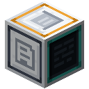

The Archive
The old world wrote letters, journals, stories, songs, recipes, manuals and notices, and kept a copy of everything. What survives is in Archive Shards, each a piece of one record with some of its text lost.
Shards
A shard learns which record it is the first time you hold it. Use it to read what is left; lost text shows as ▒.
Archive drives
 Crafting
Crafting


Use an Archive Drive to file every shard you carry into it. Shards of the same record make one better copy: whatever any of them kept is kept. The drive's tooltip counts its records and its legible letters.
In a Model Core's Data slots, a drive is practice for Reading: the model learns to predict the next letter of everything legible on it, or the next token with a tokenizer, so the more you recover, the more it has to learn from. Reading is tested on records no shard ever carries. A model can only pass by learning how the old world wrote, not by remembering what it read.
The Reader
Crafting



A Reader restores lost text. Put a shard in its tray and a model in its model slot: a checkpoint, or a Relay Card tuned to a Model Server for a model too big to hold. The Reader goes through the lost blocks one by one. For each, the model reads the text just before the block and then guesses the block letter by letter, seeing each true letter after its guess. If it guesses at least half of them, the block was predictable enough to restore, and it comes back.
A block the model cannot restore stays lost until a better model tries. A model that reads ahead, seeing the letter it is asked to guess, is turned away: it would only copy.
 Iron IngotRedstone DustBookArchive DriveGlass PaneTensor CasingWeight CrystalReader
Iron IngotRedstone DustBookArchive DriveGlass PaneTensor CasingWeight CrystalReader